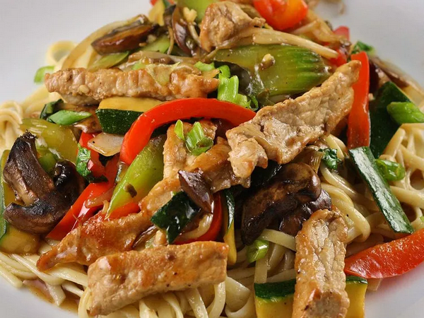

Vegetable Stir-Fry with Chicken or Pork
This chicken or pork and vegetable stir-fry recipe is based on some very tasty dishes that my Asian friends at work brought in to some office potlucks. I want to thank Cindy Ly for taking the time to write down the ingredients for me.
- Prep Time: 20 mins
- Cook Time: 20 mins
- Total Time: 40 mins
- Servings: 4
Ingredients
- 2 tablespoons vegetable oil
- ½ pound boneless skinless chicken breasts, cut into cubes
- 2 cloves garlic, chopped
- 2 tablespoons oyster sauce
- 1 cup chopped broccoli
- 1 cup sliced green bell pepper
- 1 cup sliced carrots
- 1 cup sliced napa cabbage
- 1 cup sliced celery
- 1 cup fresh bean sprouts
- 1 cup sliced zucchini
- 1 cup chopped green onions
- 1 teaspoon salt
- ½ cup water
- 2 tablespoons mushroom soy sauce
- 1 tablespoon cornstarch
Instructions
Step 1
Heat oil in a wok over medium-high heat. Add chicken, garlic, and oyster sauce, and stir-fry until chicken is browned, 5 to 8 minutes.
Step 2
Stir in broccoli, bell pepper, carrots, cabbage, celery, bean sprouts, zucchini, green onions, and salt. Stir-fry until vegetables are crisp-tender and chicken is no longer pink in the center and the juices run clear, 4 to 8 minutes. An instant-read thermometer inserted into the center of the chicken should read at least 165 degrees F (74 degrees C).
Step 3
Stir water, soy sauce, and cornstarch together in a small bowl; pour into the wok. Cook and stir until sauce is thickened, 1 to 2 minutes.
Nutrition Facts (per serving)
Calories: 192
Fat: 8g
Carbs: 15g
Protein: 17g